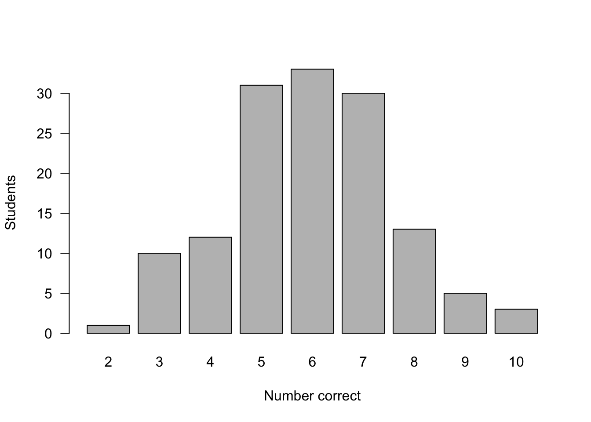
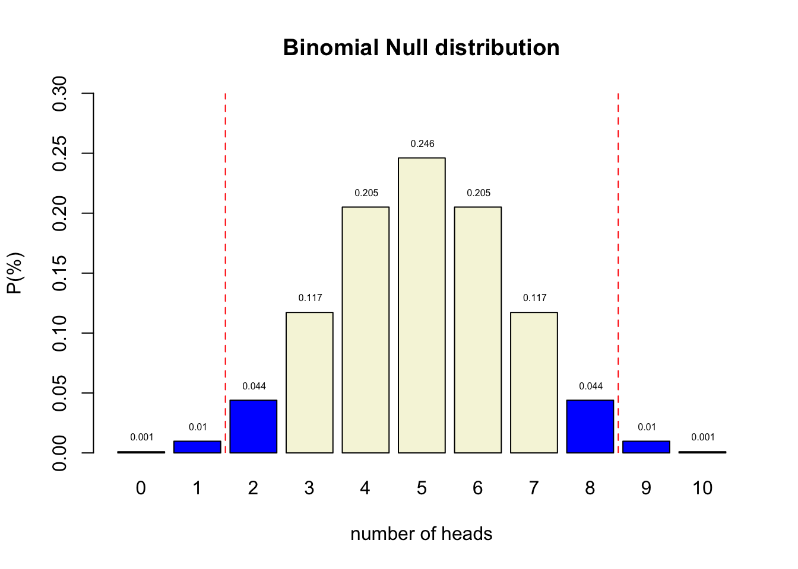
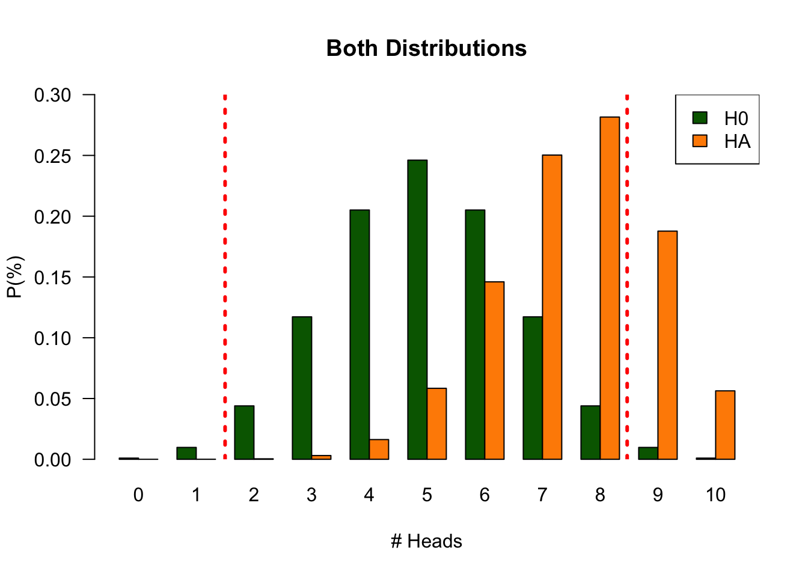
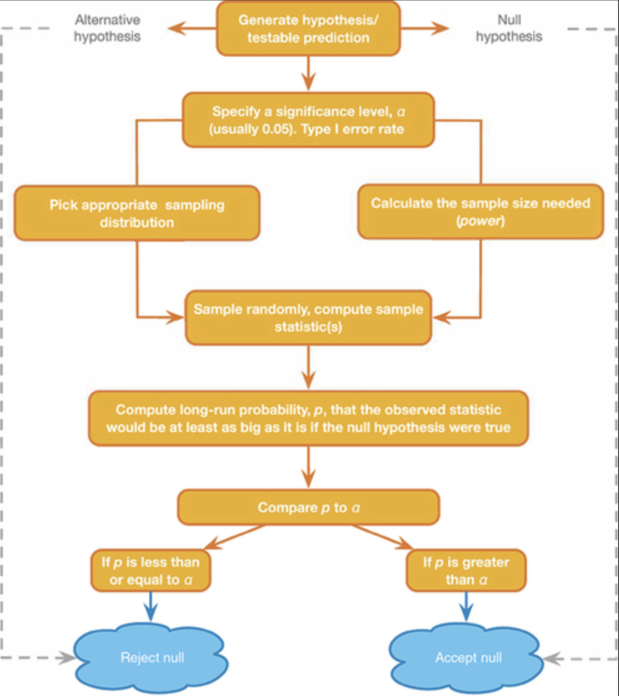
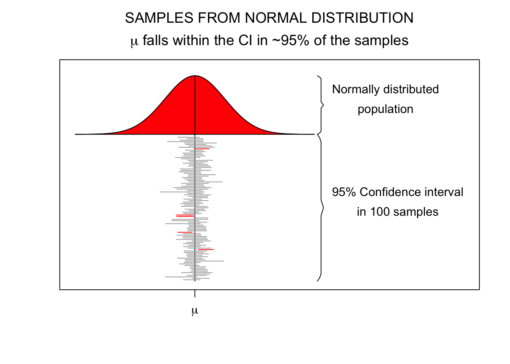
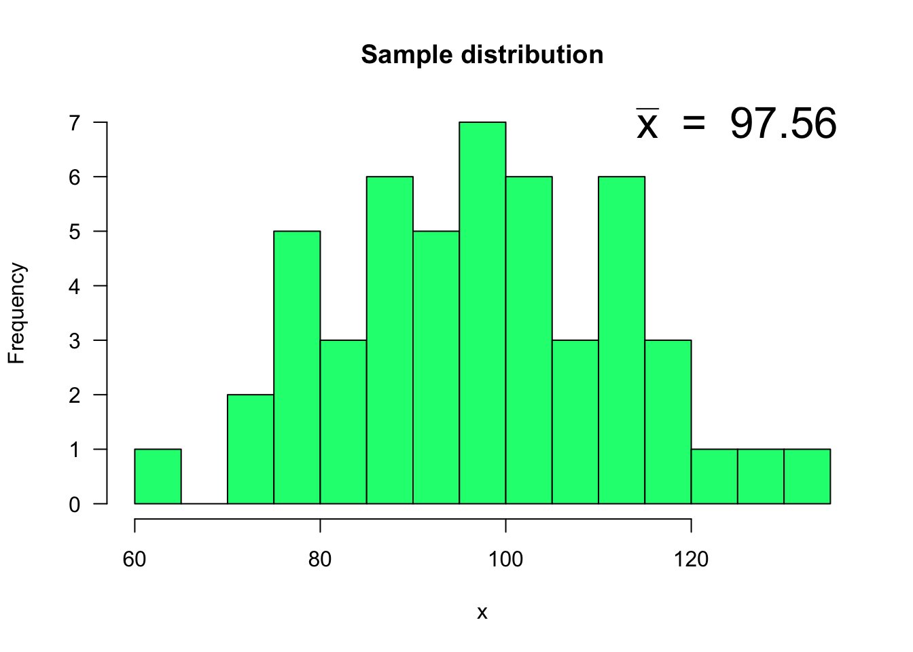
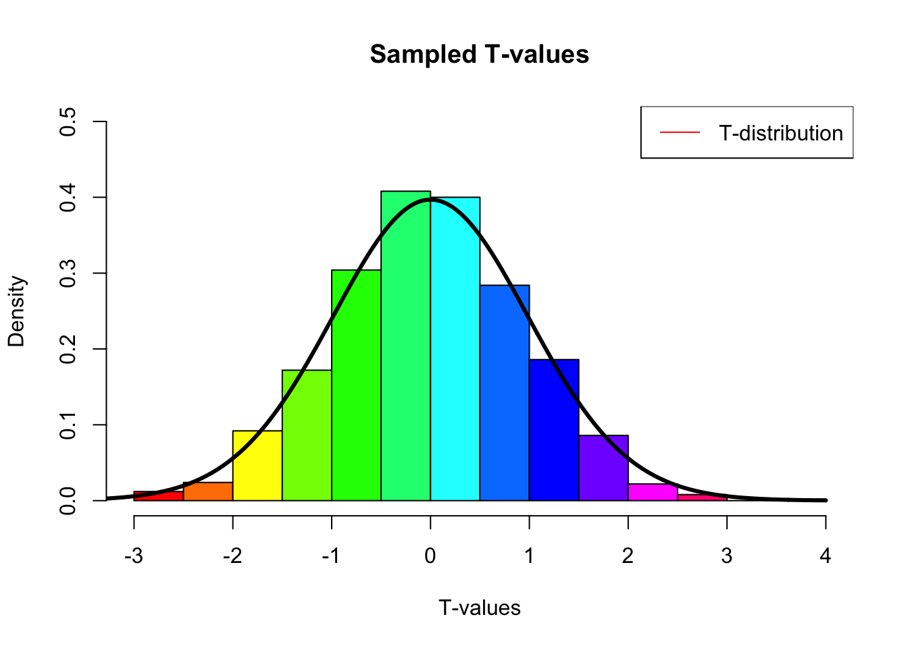
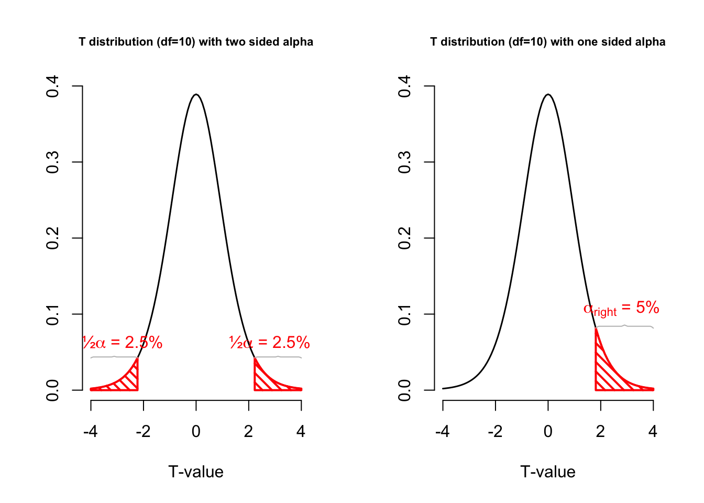

3. Statistical Reasoning
NHST and sampling distributions
In block 1 we aim to:
- Discuss NHST concepts
- Introduce JASP
- Correlation
- Linear model (regression)
Reading: Chapters 1–8.8
In this lecture we aim to:
- Introduce the S in SSR
- The book, the course, and how to study for it
- Repeat some stats concepts from RMS
- “Logic” behind common hypothesis testing
- Four scenario’s in statistical decision making
- Sampling distributions
- Discrete: the binomial distribution
- Continuous: the t-distribution
Reading: Chapters 1, 2, 3 (§1.1–1.8, §2.1–2.9, §3.1–3.8)
Statistics in SSR
The stats half of SSR
SSR has two halves that run side by side: reasoning (arguments, rationality, critical thinking) and statistics. These are the statistics lectures.
- Block 1: getting back into statistics
- NHST, correlation, regression
- Block 2: comparing means
- t-tests, ANOVA, chi-square, non-parametric tests
- Block 3: multiple predictors
- multiple regression, mediation, moderation
Each block closes with an interim exam.
What will you learn?
Not just how to compute the right number. Statistics education distinguishes three levels, and we want all three:
- Statistical literacy: knowing the concepts and working the tools
- Identify, describe, translate, interpret, read, compute
- Statistical reasoning: understanding why and how a method does what it does
- Statistical thinking: using it in the wild
- Apply: what method fits this situation?
- Critique: reflect on the work of others
- Evaluate: assign value to that work
- Generalize: what does variation mean in the large scheme of life?
Source: ARTIST
The book
Field, Discovering Statistics Using JASP.
- Block 1: Chapters 1 through 8.8 (skipping Chapter 6)
- Companion website: discoverjasp.com
- You have the book, glossary included, during the exam
So the goal is not to memorize the book, but to know your way around it.
Sections are lettered A to D
Field flags every section with a letter for difficulty, and for each letter lists what it does to your brain:
- A is for brain Attain: everyone should get something out of these
- B is for brain Bane: a bit more statistical knowledge needed, and at times a source of unhappiness
- C is for brain Complain: final-year or master’s material
- D is for brain Drain: difficult enough to drain Field’s own brain
In this course we primarily live in A and B, so focus on those sections while reading.
Faces in the margins
The book is full of little characters. The ones worth looking out for:
- Cramming Sam: the key points of a chapter, summarized. Your friend the night before an exam
- Smart Alex: the end-of-chapter tasks, with answers on the website
- Labcoat Leni: real data from real studies, instead of Field’s invented ones
- Oliver Twisted: “Please, Sir, can I have some more?” Extra material on the website
- Jane Superbrain: advanced tangents, for a deeper understanding
Study tips
- Read the chapter before the lecture. The lecture is then your second pass, not your first
- Practice statistics in JASP yourself: WA, Smart Alex tasks, and Labcoat Leni examples
- For a deeper dive, play with the applets, consult the JASP Video Library, ask questions on the Discussion Board or have a chat with Roenny
Exam
- Statistics proportional to lectures (IE1: 40%, IE2: 60%, IE3: 50%)
- MC, OEQ, Fill-in-the-blank
- You have JASP and the book, glossary included, during the exam
- See the trial exam in Ans during the exam week
Null Hypothesis
Significance Testing
Are you a physics expert?
Before we do any theory, let’s collect some data. Take the test:
edu.nl/fn3r3
Measurement Tool
- Multiple choice test true/false
- Q1: The vacuum state in quantum field theory is not actually empty but contains fluctuations of virtual particles.
- 10 items/questions
- When do we decide someone is an expert?
Empirical Cycle
- Observation Someone seems to be very knowledgeable on physics
- Induction They could be an expert in the field
- Deduction \(H_0\): P: \(\theta = 0.5\) → C: I was guessing
- Deduction \(H_A\): P: \(\theta > 0.5\) → C: I have knowledge
- Deduction \(H_A\): P: data \(\neq\) EV → C: candidate is expert
- Testing Choose \(\alpha\) and Power
- Evaluation Make a decision
Two hypotheses
\(H_0\)
- Skeptical point of view
- No effect
- No preference
- No correlation
- No difference
\(H_A\)
- Refute Skepticism
- Effect
- Preference
- Correlation
- Difference
What if they were just guessing?
What happens if they are guessing?
Your scores
Let’s analyse the null distribution of the results.
The scores in this room
Binomial distribution
\[P(k \text{ success out of } n \text{ trials} \mid \text{probability } p) = {n\choose k}p^k(1-p)^{n-k}\] where \[ {n\choose k} = \frac{n!}{k!(n-k)!} \]
With values:
n <- 10 # Sample size
k <- 0:10 # Discrete probability space (numbers 0, 1, ..., 9, 10)
p <- .5 # Probability of correct guessThe null distribution

What we just did has a name
The number of correct answers is a test statistic.
A statistic that summarizes the data and is used for hypothesis testing, because we know how it’s distributed under different hypotheses
Common test statistics:
- Number of heads
- Sum of dice
- \(t\)-statistic
- \(F\)-statistic
- \(\chi^2\)-statistic
- etc…
What do those bar heights mean?
- Objective Probability
- Relative frequency in the long run
How surprising is the data?
Testing
The candidate had 8 items correct. Can we conclude they are a physics expert?
- As you can see from the distribution of novice scores, we cannot conclude that by definition.
- What we can do is indicate how rare 8 is in a novice.
Testing
- Based on the null distribution we can see that the expected value (EV) is 5
- We can now define the \(H_0\) hypothesis: \(H_0: EV = 5\)
- What is the alternative hypothesis?
- The alternative hypothesis describes a situation where the candidate is expert
- We could say that the alternative hypothesis is not 5
- \(H_A: EV \ne 5\)
- We could also formulate our \(H_0\) and \(H_A\) more abstract:
- \(H_0:\) the candidate is novice
- \(H_A:\) the candidate is expert
- What criterion should we use to conclude that one would be expert?
- In the social sciences this \(\alpha\) criteria is often 5%.
- Candidate scored 8 items correct. That is more frequent than 5%.
- Therefore, we conclude that our candidate is probably novice but we can never be sure.
P-value
Conditional probability of the observed test statistic or more extreme assuming the null hypothesis is true.
Reject \(H_0\) when:
- \(p\)-value \(\leq\) \(\alpha\)
P-value in \(H_{0}\) distribution

P-value and \(\alpha\)
Alpha determines how willingly we reject the null hypothesis:
- Increase \(\alpha\) = reject null hypothesis more often
- Increases Type I error rate
- Decreases Type II error rate
- Historically set to 0.05, but widely criticized (see Jane Superbrain 3.1)
No scientific worker has a fixed level of significance at which from year to year, and in all circumstances, he rejects hypotheses; he rather gives his mind to each particular case in the light of his evidence and his ideas. (Fisher, 1956)
Misconceptions about the p-value
- A significant result means that the effect is important
- Significance = effect size + sample size
- A non-significant result means that the null hypothesis is true
- A significant result means that the null hypothesis is false
What can go wrong?
Neyman-Pearson Paradigm


Fisher asked how surprising is this data? Neyman and Pearson asked a different question: which mistakes am I willing to make, and how often?
Alternative Distribution
But we have no clue what this distribution could look like.
For now let’s assume the probability of answering an item correctly is .75

Both distributions at once

Everything that can go wrong lives in the overlap.
Decision table
Alpha \(\alpha\)
- Incorrectly reject \(H_0\)
- Type I error
- False Positive
- Threshold for “significance”
- Criteria often 5% but heavily criticized
Power
- Correctly reject \(H_0\)
- True positive
- Power equal to: 1 - Beta
- Beta is Type II error
- Criteria often 80%
- Depends on sample size
One minus alpha
- Correctly accept \(H_0\)
- True negative
Beta
- Incorrectly accept \(H_0\)
- Type II error
- False Negative
- Criteria often 20%
- Distribution depends on sample size
Play with it
Play around with this app to get an idea of the probabilities
NHST Reasoning Scheme

Up next: three distributions
What is the difference between
- Population distribution
- Sample distribution
- Sampling distribution
Standard Error and
Confidence Intervals
A sample mean is not the population mean. How far off is it, typically?
Standard Error
95% confidence interval
\[SE = \frac{\text{Standard deviation}}{\text{Square root of sample size}} = \frac{s}{\sqrt{n}}\]
- Lowerbound = \(\bar{x} - 1.96 \times SE\)
- Upperbound = \(\bar{x} + 1.96 \times SE\)
Standard Error

T-distribution
Gosset

In probability and statistics, Student’s t-distribution (or simply the t-distribution) is any member of a family of continuous probability distributions that arises when estimating the mean of a normally distributed population in situations where the sample size is small and population standard deviation is unknown.
In the English-language literature it takes its name from William Sealy Gosset’s 1908 paper in Biometrika under the pseudonym “Student”. Gosset worked at the Guinness Brewery in Dublin, Ireland, and was interested in the problems of small samples, for example the chemical properties of barley where sample sizes might be as low as 3.
Source: Wikipedia
Population distribution
set.seed(123)
layout(matrix(c(2:6,1,1,7:8,1,1,9:13), 4, 4))
n <- 50 # Sample size
df <- n - 1 # Degrees of freedom
mu <- 100
sigma <- 15
IQ <- seq(mu-45, mu+45, 1)
par(mar=c(4,2,2,0))
plot(IQ, dnorm(IQ, mean = mu, sd = sigma), type='l', col="black", main = "Population Distribution",
lwd = 3, bty= "n", axes = FALSE, xlab = c(60, 140))
axis(1)
n.samples <- 12
for(i in 1:n.samples) {
par(mar=c(2,2,2,0))
hist(rnorm(n, mu, sigma), main="Sample Distribution", xlab = c(60, 140),
cex.axis=.5, col=rainbow(12)[i], cex.main = .75, las = 1, axes = FALSE)
axis(1)
}
A sample
Let’s take one sample from our normal population and calculate the t-value.
x <- rnorm(n, mu, sigma); x [1] 116.11018 99.58980 99.50004 77.25899 111.85578 96.83899 90.14886
[8] 78.81961 95.50356 87.26408 94.04454 81.73600 125.31384 99.75996
[15] 116.12418 60.97450 93.20203 89.86777 81.65611 123.19914 78.77077
[22] 104.77585 112.69654 102.67285 86.87117 114.11749 102.55882 84.04753
[29] 79.17926 131.30076 89.82245 72.16643 107.99889 104.65345 79.69248
[36] 70.85565 98.25546 117.09094 109.54186 92.60594 87.48718 104.06600
[43] 102.36030 109.44568 94.06303 113.49031 87.53783 95.04183 111.11222
[50] 114.84957hist(x, main = "Sample distribution", col = rainbow(12)[6], breaks = 15, las =1)
text(125, 7, bquote(bar(x) ~ " = " ~ .(round(mean(x),2))), cex = 2)
More samples
let’s take more samples.
n.samples <- 1000
mean.x.values <- vector()
se.x.values <- vector()
for(i in 1:n.samples) {
x <- rnorm(n, mu, sigma)
mean.x.values[i] <- mean(x)
se.x.values[i] <- (sd(x) / sqrt(n))
}Mean and SE for all samples
head(cbind(mean.x.values, se.x.values)) mean.x.values se.x.values
[1,] 97.95275 2.214004
[2,] 103.18582 2.273371
[3,] 99.99038 2.000590
[4,] 99.90585 2.182437
[5,] 102.90184 2.281151
[6,] 101.50350 2.200165Sampling distribution
Of the mean
hist(mean.x.values,
col = rainbow(12),
main = "Sampling distribution of the mean",
xlab = "1,000 sample means")
T-statistic
\[T_{n-1} = \frac{\bar{x}-\mu}{SE_x} = \frac{\bar{x}-\mu}{s_x / \sqrt{n}}\]
So the t-statistic represents the deviation of the sample mean \(\bar{x}\) from the population mean \(\mu\), considering the sample size, expressed as the degrees of freedom \(df = n - 1\)
t-value
\[T_{n-1} = \frac{\bar{x}-\mu}{SE_x} = \frac{\bar{x}-\mu}{s_x / \sqrt{n}}\]
tStat <- (mean(x) - mu) / (sd(x) / sqrt(n))
tStat[1] -1.44089Calculate t-values
\[T_{n-1} = \frac{\bar{x}-\mu}{SE_x} = \frac{\bar{x}-\mu}{s_x / \sqrt{n}}\]
t.values <- (mean.x.values - mu) / se.x.values
tail(cbind(mean.x.values, mu, se.x.values, t.values)) mean.x.values mu se.x.values t.values
[995,] 104.50415 100 2.440743 1.84539987
[996,] 98.14145 100 1.980949 -0.93821319
[997,] 99.79017 100 2.351101 -0.08924917
[998,] 101.63763 100 2.070541 0.79091992
[999,] 103.63661 100 2.409829 1.50907422
[1000,] 96.48503 100 2.439441 -1.44089031Sampled t-values
What is the distribution of all these t-values?
hist(t.values,
freq = FALSE,
main = "Sampled T-values",
xlab = "T-values",
col = rainbow(12),
ylim = c(0, .5))
myTs = seq(-4, 4, .01)
lines(myTs, dt(myTs,df), lwd = 3, col = "black")
legend("topright", lty = 1, col="red", legend = "T-distribution")
T-distribution
So if the population is normaly distributed (assumption of normality) the t-distribution represents the deviation of sample means from the population mean (\(\mu\)), given a certain sample size (\(df = n - 1\)).
The t-distibution therefore is different for different sample sizes and converges to a standard normal distribution if sample size is large enough.
The t-distribution is defined by:
\[\textstyle\frac{\Gamma \left(\frac{\nu+1}{2} \right)} {\sqrt{\nu\pi}\,\Gamma \left(\frac{\nu}{2} \right)} \left(1+\frac{x^2}{\nu} \right)^{-\frac{\nu+1}{2}}\!\]
where \(\nu\) is the number of degrees of freedom and \(\Gamma\) is the gamma function.
Source: wikipedia

One or two sided
Two sided
- \(H_A: \bar{x} \neq \mu\)
One sided
- \(H_A: \bar{x} > \mu\)
- \(H_A: \bar{x} < \mu\)

Power in practice
- Strive for 80%
- Based on know effect size
- Calculate number of subjects needed
- Use JASP (Power module), G*Power, or SPSS to calculate

Alpha Power
Applet: a continuous sampling distribution
The same reasoning as the binomial applet, now for a continuous outcome.
Play around with this app to see how the t-distribution, \(\alpha\), and power hang together
Closing
Next Time
- JASP
- Descriptive statistics
- Data visualizations
- Variance and z-scores
Bored?
Contact